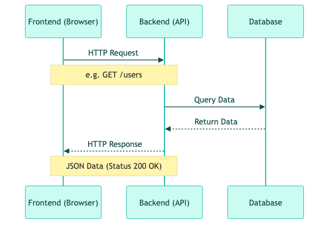
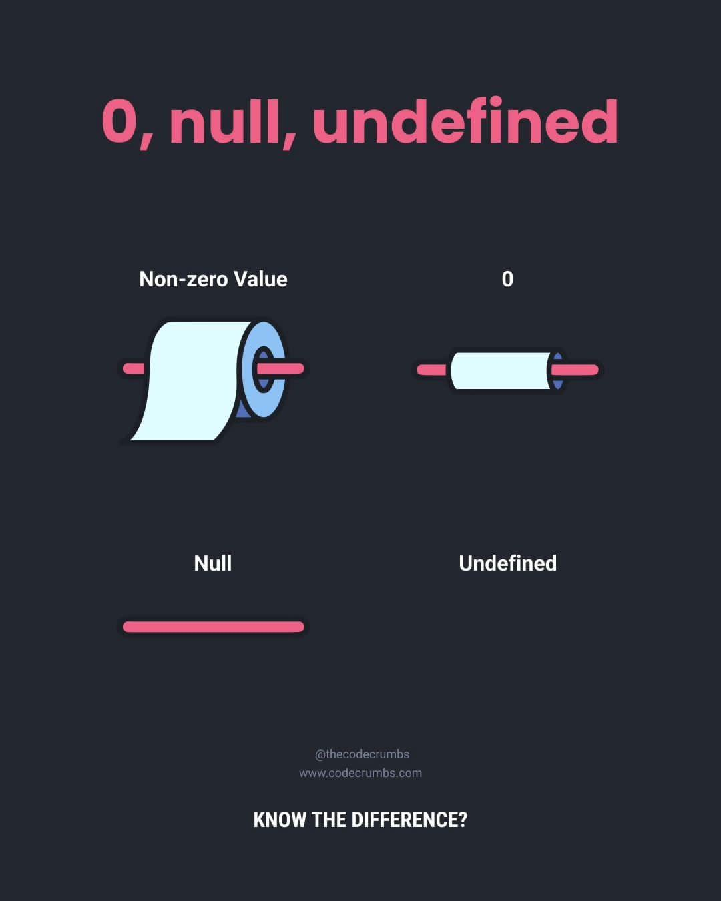

IT部は単なる「コードを書く部署」ではありませんでした。
技術的に優れたシステムでも、現場のオペレーションに馴染まなければ「不便な道具」になってしまう。
この1年で得た最大の教訓、そして本研修の指針です。
「技術を手段として、目的を見失わないこと」
私たちの活動は、コードを書くこと自体が目的ではありません。 テクノロジーを手段として、学園祭の価値を最大化することが真の目的です。
私たちが構築するシステムは、堅牢なクライアント/サーバーアーキテクチャを採用しています。 各層の役割を深く理解しましょう。
「ユーザー体験の最前線」
「システムの頭脳・縁の下の力持ち」
ユーザーには直接見えませんが、裏側で情報の「計算・加工・保存」をすべて引き受けている場所です。

「フロントとバックを繋ぐ架け橋」
2つの異なるシステムが会話するための 契約（プロトコル） です。
POST /api/votes (投票したい！){ boothId: "B-123", userId: "U-999" }200 OK (成功したよ！){ currentVotes: 50, message: "投票完了" }私たちが学ぶ言語の背景を知っておきましょう。
const let arrow function などが登場し、本格的なアプリ開発が可能に。現在使われているのは「モダンJavaScript」と呼ばれるものです。 古い解説記事（varを使っているものなど）は、現在の開発には適さない場合があるため注意が必要です。
なぜ、JavaScriptではなくTypeScriptを使うのでしょうか？
「転ばぬ先の杖」 として、現代のWeb開発ではTypeScriptがデファクトスタンダードです。
変数は、コンピュータのメモリ（記憶場所）にあるデータに「名前ラベル」を貼って管理する仕組みです。 まずは、複数のデータが混ざらないように 「名前を書いたラベルを貼った、データの置き場所」 だとイメージしましょう。
// 1. 宣言: 「age」という名前の置き場所（メモリ領域）を確保する
let age;
// 2. 代入: その場所に数値を「記憶させる」
age = 20;
// 3. 初期化 (宣言と代入を同時におこなう)
const name = "Shake";
昔のJavaScriptにあった var は、メモリ上の「置き場所」が有効な範囲（スコープ）が曖昧で、意図しない場所から中身が書き換わってしまうなどのトラブルが絶えませんでした。
現代のWeb開発では、バグを防ぐために const
と
let
以外は使いません。
古いネットの記事などでは var が登場することがありますが、最新のルールではないため、真似をしないように注意しましょう。
「基本はすべて
const
で書く」 のが現代のエンジニアの作法です。
const (定数)let (変数)エンジニアの鉄則：迷ったら
const すべてを const で書き始め、エラー（上書きエラー）が出て初めて let を検討するのが、最も安全でスマートな書き方です。
値を後から変更する可能性がある変数には let を、変更してはいけない変数には const を使います。 以下のコードで、ユーザー名は変更不可、現在のレベルは変更可能にするには、それぞれどちらを使いますか？
____ userName = "Shake"; // 変更不可にしたい
____ currentLevel = 1; // 後で変更したい
// userName = "Taro"; // これはエラーになるべき
currentLevel = 2; // これはOK
console.log(userName);
console.log(currentLevel);
// @test: typeof userName !== 'undefined' && userName === "Shake"
// @test: typeof currentLevel !== 'undefined' && currentLevel === 2
const userName = "Shake"; // 変更不可
let currentLevel = 1; // 変更可能
const: 再代入不可（定数）。基本的にはこちらを使います。let: 再代入可能（変数）。カウンターや状態管理など、値が変わるものに使います。コードは 「書く時間」より「読まれる時間」の方が圧倒的に長い です。 未来の自分やチームメイトのために、分かりやすい名前をつけましょう。
先頭は小文字、区切りは大文字。変数名や関数名 で最も一般的に使われます。
studentId, isLoggedIn, fetchUserDataStudentId (クラスやコンポーネントに見える)student_id (データベースのカラム名などに見える)先頭も区切りも大文字。コンポーネント名、クラス名、型名（Type/Interface） に使います。
StudentList, UserConfig, UserTypestudentList (ただの変数に見える)プログラミングは英語がベースです。将来的にAIにコードを解説させたり、外部のドキュメントを読んだりする際の妨げになるため、日本語をローマ字にした名前は絶対に避けましょう。
namae, gakuseiId, shohin_listname, studentId, productListTip: 適切な英単語が思い浮かばない時は、DeepLなどの翻訳ツールやGeminiに聞けば一瞬で答えを教えてくれます！
const d = 100; (dって何？)const maxDiscount = 100; (最大割引額だとすぐわかる)名前には「何が入っているか」だけでなく、「どんな役割か（Role）」 を込めましょう。
JavaScriptのデータ型は、大きく プリミティブ型 と オブジェクト型 に分かれます。 まずはプリミティブ型（基本型）を極めましょう。
文字列(文字の連続)を取り扱う型です。
文字列をつなぐ方法は2つあります。現代では 「テンプレートリテラル (バッククォート ` )」 を使うのが主流です。
const firstName = "Taro";
const lastName = "Yamada";
// 古い書き方 (＋で繋ぐ)
const fullName1 = firstName + " " + lastName;
// モダンな書き方 (バッククォート \` の中で ${} を使って変数を埋め込む)
const fullName2 = `${firstName} ${lastName}`;
console.log(fullName2); // "Taro Yamada"
文字列は、「文字数」などの情報を持っています。
// .length で長さを取得
console.log(firstName.length); // 4
JavaScriptでは、整数(integer)も浮動小数点数(float)もすべて number 型です。 区別はありません。
const integer = 10;
const float = 0.5;
// 演算子 (Operator)
console.log(10 + 5); // 15 (加算)
console.log(10 - 5); // 5 (減算)
console.log(10 * 5); // 50 (乗算)
console.log(10 / 2); // 5 (除算)
%「割り算の余り」を求めます。
console.log(10 % 3); // 1 (10 ÷ 3 = 3 余り 1)
ループ処理で「3回に1回だけ処理する」などの制御によく使います。
プログラミングの「頭脳」 となる部分です。 true か false で世界を判定します。
===: 厳密等価（値も型も同じ） ※現代JSでは常にこれを使う！!==: 厳密不等価（値または型が違う）> , < , >= , <=: 大小比較const age = 18;
const isAdult = age >= 18; // true
== の罠：暗黙の型変換== (等価演算子) は、比較するときに自動で型を変換してしまいます。これが意図しないバグ（暗黙の型変換）を引き起こします。
比較 | 結果 | 理由 |
|
| 文字列が数値に変換される |
|
| 0とfalseが同じ「偽」として扱われる |
|
| 空文字と0が同じものとして扱われる |
「型」も含めて厳密にチェックする
===
を使えば、これらはすべて
false
になり、安全です。 モダンな開発では、特別な理由がない限り 100%
===
を使ってください。
「入力されたID(inputID)」と「保存されているID(savedID)」が一致しているかを確認したいです。 型変換による予期せぬバグを防ぐため、厳密等価演算子を使って比較してください。
const inputID = "12345";
const savedID = 12345;
// 型変換をしてから、厳密に比較する
if (Number(inputID) ____ savedID) {
console.log("認証成功");
}
// @test: Number(inputID) === savedID
if (Number(inputID) === savedID) {
console.log("認証成功");
}
== ではなく === を使う癖をつけましょう。比較する前には、Number() などで型を揃えるのがベストプラクティスです。
複数の条件を組み合わせる魔法の記号です。
&&)：かつすべての条件が true のときだけ true になります。
// 「在庫があり」 かつ 「お金が足りている」
const canBuy = hasStock && hasMoney;
ショートサーキット: JSは左から順に判定します。もし左側が false なら、右側は見ることなく即座に false と確定します。
||)：またはどちらか片方でも true なら true になります。
// 「会員」 または 「招待券を持っている」
const canEnter = isMember || hasTicket;
ショートサーキット: 左側が true なら、右側を見るまでもなく true と確定します。
!)：否定true を false に、false を true に反転させます。
// 準備完了して「いない」 (!true -> false)
const isNotReady = !isReady;
!! (二連否定)値を明示的に boolean 型に変換したいときによく使われます。 const isExist = !!user; // userがいればtrue, なければfalse

「中身がまだ決まっていない」という、システム側の都合で発生する「ない」。
🚨 注意: 開発者が自ら user = undefined と代入するのは、システム本来の挙動と区別がつかなくなるため アンチパターン（やってはいけないこと） とされています。
「ここには値がない」と、開発者が意図的に設定した「ない」。
使い分けの極意: 「システムが勝手に用意する "ない"」が undefined。「人間が明示的にセットする "ない"」が null です。
これらはすべて「ない」に関連しますが、意味も型も全く別物です。
特徴 |
|
|
|
|
意味 | システム的な「未定義」 | 意図的な「空 / 無」 | 数値としての「ゼロ」 | 長さ0の文字列 |
型 |
|
|
|
|
財布の例え | 財布を買う前（存在不明） | 財布を家に置いた（無） | 財布の中身が0円（数値） | 中身のない名札（テキスト） |
Warning:
0 や "" は「有効な値」ですが、null や undefined は「値そのものがない」状態です。APIからデータを取得する前の「初期状態」として、変数 userProfile を定義します。 「まだデータがない」ことを明示するために、エンジニアが主導権を持って使うべき値はどちらですか？
// まだ取得していないので、意図的に空にする
let userProfile = ____;
console.log(userProfile);
// @test: userProfile === null
let userProfile = null;
null: 「空である」ことを明示的にセットする値。undefined: 「未定義」を表す値（初期化忘れなどでシステムが勝手に入れることが多い）。「データ待ち」の状態は意図的なものなので、null を使うのが一般的です。
コードは「コンピュータへの命令」ですが、同時に 「人間への手紙」 でもあります。 コメント機能を使って、コードの意図を残しましょう。
// 1行コメント: この行の説明を書きます。
/*
複数行コメント:
長い説明や、
一時的にコードを無効化したい時に使います。
*/
const tax = 0.1; // 消費税率（2026年現在）
Tip: 「何をしているか」はコードを見ればわかります。 「なぜそうしたのか（Why）」 をコメントに残すと、未来の自分が助かります。
console.log 以外にも便利な機能があります。
// 通常のログ
console.log("処理を開始します");
// 警告 (黄色く表示されることが多い)
console.warn("バッテリー残量が低下しています");
// エラー (赤く表示され、スタックトレースが出る)
console.error("通信に失敗しました！");
エラーが出た時は、この console.error の内容をGoogleで検索するのが解決の近道です。
エンジニアリングの基礎となる概念を幅広くカバーしました。
const で堅牢なコードを書く。${} ) で**「読みやすいコード」**を目指す。boolean と論理演算子 (&&, ||) を使いこなして条件を操る。次回は、いよいよプログラミングの醍醐味である 「ロジック（論理）」 に触れます。
今日の「箱」と「型」の知識があれば、必ず理解できます。 お疲れ様でした！